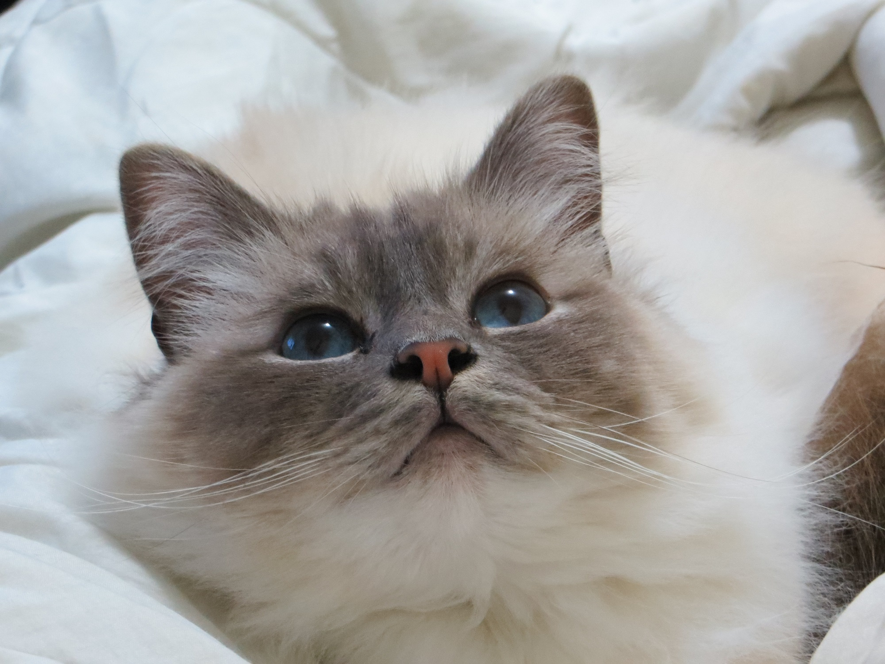
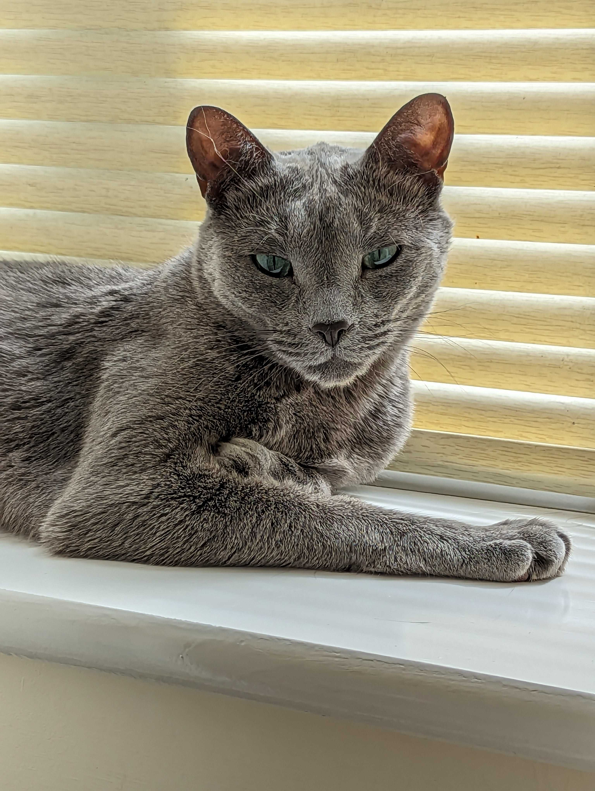

About Me
Top 3 facts
- Cat mum to Riley and Ash. Riley is a blue point tabby Birman, Ash is a Russian Grey.
- Adopted the nickname Tigermoo when first playing through a Pokemon game, I'm now Tigermoo everywhere.
- Late diagnosed autistic in 2022, I've since done a podcast to raise awareness and
help people who may feel the same way I did find out what it could be, that they're not alone,
and to mythbust.
Link to podcast

